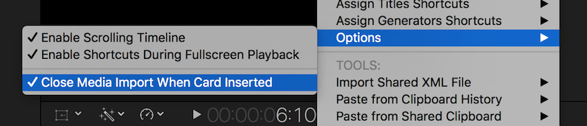
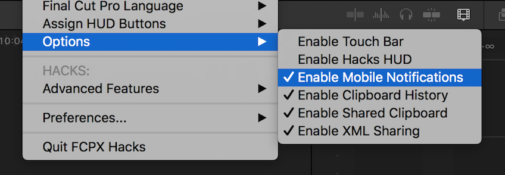

#
Final Cut Pro Hacks

Updated (20TH APRIL 2017)
#
IMPORTANT UPDATE
FCPX Hacks has now been superseded with a standalone application called CommandPost, which offers all the same functionality of FCPX Hacks, plus a whole lot more – including Text to Speech & Watch Folders. It remains free and open source.
We strongly recommend removing FCPX Hacks, and installing CommandPost instead.
You can learn more about CommandPost here: commandpost.io
#
INTRODUCTION
FCPX Hacks is a free and open source Hammerspoon script that adds a mountain-load of new features to Final Cut Pro. It originally started off as a little proof of concept project to make finding the browser playhead easier for Scott Simmons (read the original blog post below) – but has since grown into a huge collection of handy workflow hacks, shortcuts, tools and automation features to make editing within Final Cut Pro faster, easier and much more powerful.
Video inspired by this AMAZING video by Thomas Grove Carter.
#
SYSTEM REQUIREMENTS
FCPX Hacks requires Final Cut Pro 10.3 to 10.3.2 and Hammerspoon 0.9.52 (or above).
FCPX Hacks does NOT work with Final Cut Pro 10.3.3 (or above).
It’s compatible with macOS 10.10.5 (or above), and works with any language and keyboard layout.
The Touch Bar feature requires macOS Sierra 10.12.1 build 16B2657 (or above).
We recommend changing the Hammerspoon Notification alert style to Alerts. This can be done in the Notifications section of macOS System Preferences once Hammerspoon has been installed.
FCPX Hacks is compatible with Final Cut Pro 10.2.3, however it’s no longer supported and new features will not be added for this older version – we recommend updating to Final Cut Pro 10.3.2. Earlier versions of Final Cut Pro X are not supported, and FCPX Hacks is not designed to have Final Cut Pro 10.2 and 10.3 on the same system. It does not work with Final Cut Pro 7 (or below).
#
DONATE
Coding crazy stuff like this takes a LOT of time (especially for a non-programmer), so if you find FCPX Hacks useful, PLEASE consider making a voluntary PayPal donation below (no matter how big or small) or buy a cool Wizards T-shirt so that I can continue to justify to my wife and the rest of the team at LateNite, that coding into the middle of the night is worthwhile!
Don’t have any spare cash? Then consider just sharing the news of FCPX Hacks online, so we can get more people testing it out. The more feedback I get, the quicker it is to squash bugs, and come up with cool new features to include. Or if you’re a programmer, check out Github to see if you can help out, or you can help translate FCPX Hacks into other languages.
Also, if there’s a feature that you or your company desperately need, please get in touch to discuss contracting me to throw it together as a priority.


#
DOWNLOAD
Please be aware that I’m a filmmaker, not a programmer, so use at your own risk!
FCPX Hacks is no longer supported or updated. We recommend using CommandPost instead.
After downloading and installing the latest version of Hammerspoon (which you must do first), you can just download and open up the above DMG file, make sure Hammerspoon is closed, then drag the script files on the left to the Hammerspoon folder on the right (replacing any existing files if you’ve previously installed FCPX Hacks). If you need help installing Hammerspoon, you can refer to the original blog entry below.
DISCLAIMER: As some of the Advanced features in FCPX Hacks make changes to Final Cut Pro’s internal files (which requires your Administrator password), please take care when using on mission critical or production systems. However, FCPX Hacks basically sits “on top” of Final Cut Pro, so it shouldn’t ever cause Final Cut Pro to crash to slow down.
#
SPECIAL THANKS
MASSIVE thank you to Aaron Magill and Chris Jones for all their help and support with Hammerspoon – they’re both truly awesome people. And a HUMONGOUS thank you to the amazing David Peterson for his programming genius and Github Training! David is slowly turning all of my rubbish code into something really awesome!
Also, a very big thank you to Bill Cheeseman PFiddlesoft, for all his help with UI Browser and his very generous GUI Scripting advice. Thanks also to Hans Linssen, Yvan Koenig and Tim Webb for their troubleshooting help, and to Andreas Verhoeven & Robbert Klarenbeek for the work they’ve done with Touch Bar Demo App.
MASSIVE thank you to the INCREDIBLE Andrew Kramer at Video Copilot for giving the world FX Console for FREE – and also inspiring me to rip off his genius idea and include a “console” feature in FCPX Hacks!
An equally MASSIVE thank you to the always amazing Karen Hocking, Daniel Daperis, David Hocking, Андрей Смирнов, Alex Gollner, Scott Simmons, Isaac J. Terronez, Shahin Shokoui, Ilyas Akhmedov and everyone in the FCPX Editors InSync Facebook Group for all their ideas and advice!
The FCPX Hacks logo was designed by the very generous and talented Sam Woodhall.
#
HOW TO USE
FCPX Hacks adds a menu to the top right corner of the screen in the macOS menubar. This gives you quick and easy access to a range of shortcuts, automation tools, hacks and both the FCPX Hacks and Hammerspoon settings.
If you don’t want FCPX Hacks appearing in your menubar, you can also use an icon instead:
When you launch FCPX Hacks for the first time, it will use default shortcuts keys, which are listed below. However you can customise these shortcut keys via Final Cut Pro’s own Command Editor. This feature is disabled by default and must be activated by clicking Enable Hacks Shortcuts in Final Cut Pro from the FCPX Hacks menubar. As this feature changes Final Cut Pro’s internal keyboard layouts – it will require your Administrator password (so as with all of the Hacks, use with care).
Another handy feature is the Display Proxy/Original Icon. This inserts a blue or red dot (as shown in the first screenshot above) in the menubar to visually highlight if you’re watching Proxy or Original files in the Viewer. This is really handy to be able to instantly see if you’re watching full quality or not.
FCPX Hacks Console (Default Shortcut: CONTROL+SPACEBAR)
Inspired by Andrew Kramer’s INCREDIBLE FX Console free plugin for After Effects, we’ve also added a “console” to FCPX Hacks. It allows you to activate a bunch of the different shortcuts and automation features directly from the search tool. However, what’s really handy is that if you, for example, click Update Effects List from the Assign Effects Shortcuts menu, ALL of your effects will appear in the console for easy access – allowing you to very quickly add effects with only your keyboard! You can do this for Effects, Transitions, Titles and Generators. You can also right click on the Console to control what items are displayed (i.e. you may only want to see Effects).
Sometimes you might also want to remove certain things from the console too – such as the Blur Title, because what you REALLY want is the Blur Video Effect. To do this, simply right click on an item and select Remove from List. We also offer a Remove From List Mode that allows you to remove multiple items in bulk. You can also Favourite items to make sure they always appear on the top of the list.
FCPX Hacks HUD (Default Shortcut: CONTROL+OPTION+COMMAND+A)
The HUD (Heads Up Display) is a cool little extra window for Final Cut Pro that offers an Inspector, Drop Targets and Buttons – which can individually be shown or hidden via the Preferences > HUD Options menubar. The Inspector shows you what Media & Quality mode you’re currently in, as well as if Automatic Background Rendering is enabled.
The XML Sharing feature is discussed below.
The four buttons at the bottom of the HUD, are completely customisable via the Assign HUD Buttons menu in the FCPX Hacks menubar.
#
SHORTCUTS
Open Final Cut Pro (Default Shortcut: CONTROL+OPTION+COMMAND+L)
With FCPX Hacks open, you can now open Final Cut Pro at any time, system wide.
Create Optimized Media (No Default Shortcut) This shortcut simply activates “Create Optimized Media” within the Final Cut Pro Import Preferences. This can save you a couple of clicks, and also allows you to quickly check whether the setting is ticked or not in one mouse click.
Create Multicam Optimized Media (No Default Shortcut) This shortcut simply activates “Create optimized media for multicam clips” within the Final Cut Pro Playback Preferences. This can save you a couple of clicks, and also allows you to quickly check whether the setting is ticked or not in a single mouse click
Create Proxy Media (No Default Shortcut) This shortcut simply activates “Create Proxy Media” within the Final Cut Pro Import Preferences. This can save you a couple of clicks, and also allows you to quickly check whether the setting is ticked or not in a single mouse click.
Leave Files in Place on Import (No Default Shortcut) This shortcut simply activates “Leave in Place” within the Final Cut Pro Import Preferences. This can save you a couple of clicks, and also allows you to quickly check whether the setting is ticked or not in a single mouse click.
Enable Background Render (No Default Shortcut) This shortcut simply activates “Background Render” within the Final Cut Pro Playback Preferences. This can save you a couple of clicks, and also allows you to quickly check whether the setting is ticked or not, as well as what the start after time is set to in a single mouse click.
#
AUTOMATION
Highlight Browser Playhead (Default Shortcut: CONTROL+OPTION+COMMAND+H)
By default this feature puts a big red rectangle around the Final Cut Pro browser playhead to make it really easy to instantly spot. You can change the colour to Blue, Green or Yellow and the shape to a circle or diamond within the FCPX Hacks preferences.
Reveal in Browser & Highlight (Default Shortcut: CONTROL+OPTION+COMMAND+F)
The original feature of FCPX Hacks! This feature performs a normal “Reveal in Browser”, but then highlights the playhead so that you can spot it easily.
Single Match Frame & Highlight (Default Shortcut: CONTROL+OPTION+COMMAND+S)
This feature performs a normal “Reveal in Browser”, however whatever clip your playhead is over (for example, let’s say it’s a clip called “Test”) – this feature will then automatically insert “Test” into the Browser Search box, so that only the single clip appears in the Browser, and also highlights the playhead.
Reveal Multicam in Browser & Highlight (Default Shortcut: CONTROL+OPTION+COMMAND+D)
This feature performs essentially performs a “Reveal in Browser” command on the source clip within a multicam clip. Once match-framed into the browser, it will then highlight it for easily spotting.
Reveal Multicam in Angle Editor & Highlight (Default Shortcut: CONTROL+OPTION+COMMAND+G)
This feature allows you to easily “match frame” to whatever frame your playhead is over in the Multicam Angle editor, and will also highlight the source clip within the browser.
Cut n Switch Audio/Video/Both Angle 1-16 (No Default Shortcut) Changes the multi-cam mode then performs a standard “Cut and Switch to Viewer Angle” shortcut in a single keypress.
Move To Playhead (No Default Shortcut) Performs a Cut then Paste in a single keypress.
Select Clips Forward (Default Shortcut: CONTROL+OPTION+COMMAND+RIGHT)
Select Clips Backwards (Default Shortcut: CONTROL+OPTION+COMMAND+RIGHT)
The shortcut brings back the “Select Track Forward/Backwards” or “T” tool as it was known in Final Cut Pro 7. It allows you to select all the clips in the timeline to the left or right of the timeline playhead.
Select Clip at Lane 1-10 (No Default Shortcuts) These shortcuts allow you to easily select clips outside of the Primary Storyline. For example, if you want to select a connected clip that’s directly above your primary storyline, you can assign the “Select Clip at Lane 1” to your preferred shortcut key via the Command Editor and away you go!
Restore Keyword Preset (Default Shortcut: CONTROL+OPTION+COMMAND+1 TO 9)
Save Keyword Preset (Default Shortcut: CONTROL+OPTION+COMMAND+SHIFT+1 TO 9)
One of the coolest features of FCPX Hacks is the ability to save and restore up to nine keyword presets. What this means is that if you type in up to nine keywords in the Keyword Editor, you can save all of these these keyword shortcuts to a preset, and restore it at a later time – and even on a completely different library. This is great if you’re constantly using the same keywords between libraries, or you want to have more than the default nine keyword shortcuts.
Timeline Clip Height Increase/Decrease (Default Shortcut: CONTROL+OPTION+COMMAND+PLUS OR MINUS)
Allows you to easily increase and decrease the timeline clip height. You can either press once to move in small increments, or hold down to increase/decrease quickly (something Final Cut Pro’s native shortcuts can’t do).
Batch Export from Browser (Default Shortcut: CONTROL+OPTION+COMMAND+E)
This incredibly powerful feature allows you batch export multiple clips and projects, or even the entire contents of multiple Smart/Keyword Collections, Events or even entire Libraries directly from the Final Cut Pro browser. All you need to do is make your selection, press the shortcut and let Final Cut Pro do it’s thing! By default the Batch Exporter will using your default destination and export to your last used export location, however this can be overridden via the Batch Export options in the FCPX Hacks menubar preferences.
Scrolling Timeline (Default Shortcut: CONTROL+OPTION+COMMAND+W)
As its been the number one request on Richard Taylor’s Final Cut Pro X Top Requests Master List since day one, we’ve finally added a Scrolling Timeline option to Final Cut Pro. To activate and deactivate Scrolling Timeline Mode, by default you press CONTROL+OPTION+COMMAND+W, or select Enable Scrolling Timeline from the FCPX Hacks menu. Once activated, you will see a little notification on your screen saying “Scrolling Timeline Activated”. Now, if you have your mouse in the timeline area and press spacebar, the timeline will automatically scroll for you! However, if you press spacebar with the mouse outside of the timeline area – the timeline will playback as normal, allowing you to easily switch between the two modes. You can also deactivate the scrolling timeline during playback by pressing the Scrolling Timeline Mode shortcut key again (CONTROL+OPTION+COMMAND+W). Of course, this shortcut key can always be customised as explained above! If your playhead is not visible when you press play, FCPX Hacks will automatically move your playhead to the middle of the timeline. You can continue to use all your usual shortcuts (i.e. ‘Add Marker’ and ‘Blade’) whilst playing back and the playhead will remain static.
Timeline Playhead Lock (No Default Shortcut) Similar to the Scrolling Timeline, we also offer a Timeline Playhead Lock, which when enabled, locks the timeline playhead to the centre of the timeline. This feature is off by default and you must assign it a shortcut key in the Command Editor to activate it.
Select Color Board Puck (Default Shortcuts: CONTROL+OPTION+COMMAND+M , . /)
Until now there’s been no shortcut key to individual select Color Board pucks – however thanks to FCPX Hacks, you can now not only select individual pucks with a single mouse click, but also to make colour grading within Final Cut Pro a lot easier with a control surface, we’ve added lots of additional Color Board Shortcuts to the Command Editor – such as “Color Board: Color Puck 1 & Down” – which selects the Global puck within the Color panel and then moves the puck in a downward direction. If you hold one of these shortcuts down, the puck will continue to move until you release the shortcut. None of these shortcuts have defaults, so you’ll need to assign them in the Command Editor to use them.
Mouse Control of Color Board Pucks (No Default Shortcut) These shortcuts are unassigned by default, so you’ll need to activate Enable Hacks Shortcuts in Final Cut Pro to use them. Once assigned via the Final Cut Pro Command Editor, these shortcuts allow you to control the Color Board pucks with your mouse. For example, if you assign Mouse Control Color Puck 1 to OPTION+Z, when you hold down the OPTION+Z and move your mouse – the puck will move with the mouse. This video demonstrates:
Enable Shortcuts During Fullscreen Playback (No Default Shortcut) FCPX Hacks also adds the ability to perform Set Range Start, Set Range Out, Connect to Primary Storyline, Connect to Primary Storyline Backtimed, Insert and Append to Storyline, whilst in fullscreen playback mode. This feature is off by default, and can be enabled via the FCPX Hacks Menubar. These shortcuts will still work, even if you customise your shortcuts for these commands (i.e. if you change the Set Range Start to a key other than I).
You can now Assign Individual Effects, Transitions, Titles & Generators to Keyboard shortcuts via the FCPX Hacks menubar. For example, if you assign a “Directional Blur” to Effects Shortcut 1 via the menu, when you have a clip selected in the Final Cut Pro timeline and press CONTROL+SHIFT+1, it will automatically apply the “Directional Blur” effect to that clip. You can currently assign up to 5 individual effects shortcuts. However, before the “Assign Effects Shortcuts” buttons are enabled, you need to click Update Effects List first, at this will create a list of all the effects you currently have installed on your system. If you add new effects to Final Cut Pro, you’ll need to run this command again.
#
TOOLS
Touch Bar (Default Shortcut: CONTROL+OPTION+COMMAND+Z)
For those that don’t have access to the fancy brand new MacBook Pro, inspired by the Touch Bar Demo App, we’re brought the Touch Bar to the desktop as an on-screen display! The Touch Bar offers some really handy features, such as the ability to view a “mini-timeline” allowing you to very quickly navigate your project. Via the FCPX Hacks menubar you can choose to have the Touch Bar appear wherever your mouse pointer is, to have it appear at the top centre of your timeline, for a more consistent experience. The Touch Bar will “disappear” when you close FCPX, and reposition itself if you resize the window. If you hold down the left OPTION key and click on the Touch Bar you can drag it to another location regardless of which mode you’re in.
Paste From Clipboard History (No Default Shortcut) This feature is off by default and must be activated by clicking Enable Clipboard History in the Tools Options menubar. Once activated, every time you copy something in Final Cut Pro, it will be added to the Clipboard History. FCPX Hacks currently remembers the last 5 items – even after you restart your computer. If you want to clear your history, there’s a Clear Clipboard History option in the menubar.
Paste from Shared Clipboard (No Default Shortcut) This feature is off by default and must be activated by clicking both Enable Clipboard History and Enable Shared Clipboard from the FCPX Hacks menubar. When you click Enable Shared Clipboard you will be prompted to select a folder in which you’ll save your shared clipboard. This should be a network drive, or cloud storage such as iCloud or Dropbox, so multiple editors can access the shared clipboard at the same time. Once enabled, when you copy anything in FCPX it will automatically appear on all of your machines that are running FCPX Hacks and pointing to the same Shared Clipboard folder. This makes sharing assets between machines as easy as copying and pasting!
Import Shared XML File (No Default Shortcut) This feature is off by default and must be activated by clicking Enable XML Sharing from the FCPX Hacks menubar. When you click this you will be prompted to select a folder to use as your “shared” folder (which should be a network drive, or cloud storage such as iCloud or Dropbox so that multiple editors can access this folder at the same time). Once enabled, if you drag anything from the Final Cut Pro browser to the HUD XML Sharing Drop Zone, you will be presented with a dialog box to enter a name for this XML file. Once you enter a name and click “OK”, it will automatically appear on all of your machines that are running FCPX Hacks and pointing to the same shared folder. Everyone running FCPX Hacks and pointing to the same shared XML folder will receive a macOS notification alerting them to the new XML.
**Close Media Import When Card Inserted (No Default Shortcut)**T his feature is off by default and must be activated by clicking Close Media Import When Card Inserted in the menubar. Once activated, this feature will automatically close the Media Import window in Final Cut Pro when you insert a camera card (such as an SD or CF card). 
Mobile Notifications (No Default Shortcut) This feature is off by default and must be activated by clicking Enable Mobile Notifications in the menubar. When activating this feature, you’ll be asked to enter your Prowl API key. If you don’t already have one, you can register and get one for free here.
Once activated, every time Final Cut Pro successfully or unsuccessfully completes an export, you’ll get an alert on any mobile devices that have the Prowl app installed, such as your iPhone or iPad.

#
HACKS
Enable Timecode Overlay (Default Shortcut: CONTROL+OPTION+COMMAND+T)
This feature turns on a hidden Final Cut Pro preference that enables timecode overlays in the Viewer. As this is a “hack” it requires Final Cut Pro to restart before taking affect.
Enable Moving Markers (Default Shortcut: CONTROL+OPTION+COMMAND+Y)
This feature turns on a hidden Final Cut Pro preference originally discovered by Alex4D that allows you to move markers in your timeline with your mouse. As this is a “hack” it requires Final Cut Pro to restart before taking affect.
Enable Render During Playback (Default Shortcut: CONTROL+OPTION+COMMAND+P)
This feature turns on a hidden Final Cut Pro preference that allows you to continue rendering and performing other tasks whilst Final Cut Pro is still playing back in the timeline. As this is a “hack” it requires Final Cut Pro to restart before taking affect.
Change Backup Interval (Default Shortcut: CONTROL+OPTION+COMMAND+B)
This feature allows you to manipulate a hidden Final Cut Pro preference that allows you to change Final Cut’s internal backup interval. As this is a “hack” it requires Final Cut Pro to restart before taking affect.
Change Smart Collections Label (Currently Accessed by Menubar Only) This feature allows you to change the label of the Smart Collection that’s added by default in every new Final Cut Pro project. This is just changing the meta-data behind the scenes, so it doesn’t affect your library at all (i.e. if you open the same library on another machine, it will go back to saying “Smart Collections”).
#
WHAT’S NEXT?
I’m also currently working on a bunch of other features based on things I’d love to see in Final Cut Pro, and also feedback from the Final Cut Pro community. If there’s something you’d love to see added to FCPX Hacks, let me know via the below poll.
#
What features would you like to see in FCPX Hacks?
- A shortcut to activate all audio tracks on all currently selected multi-cam clips in the timeline (issue #5)
- Move Storyline Up & Down Shortcut (issue #2)
- Add Audio Fade Handles Shortcut (issue #3)
- Select clip on Secondary Storyline Shortcut (added in FCPX Hacks 0.46)
- Transitions, Titles, Generators & Themes Shortcuts (added in FCPX Hacks)
- Remember Last Project & Layout when restarting FCPX (fixed in FCPX 10.3.3)
- Timeline Index HUD on Mouseover (issue #9)
- Watch Folders for Compressor (added in CommandPost)
- Favourites folder for Effects, Transitions, Titles, Generators & Themes (issue #11)
- Mouse Rewind History (issue #12)
- Clip Height in Timeline Shortcut (added in FCPX Hacks 0.43)
- Customisable User Interface (added in Final Cut Pro 10.3)
- Move clip(s) Head/Tail to playhead like [ and ] in Motion - moving the clip, not just the edit (issue #114)
- A shortcut for disable/enable Audio in the channel configuration (issue #601)
- Dupe Detection in Timeline (issue #186)
- Text notification when a render or export is complete (added in FCPX Hacks 0.46)
- Collapse a multicam clip so stabilisation can be added (issue #602)
- Do not create smart folders on Library creation (issue #603)
- Overwrite clip whilst retaining original attributes (issue #112)
- Remove all effects (added in Final Cut Pro 10.3)
- Finalise all Auditions in selected clips/whole timeline (issue #21)
- Continuous play in the browser (added in Final Cut Pro 10.3)
- Copy & Paste Timecode (added in Final Cut Pro 10.3)
- Shortcut to select a point in timeline to end, beginning, or to another point (issue #604)
- Keyboard shortcut to update thumbnails (issue #605)
- Trim synchronised/compound/multicam clips to the useful video length (issue #606)
- Timeline zooming with scroll wheel like Sony Vegas (issue #113)
- Gang Sync (issue #607)
- Shortcut to highlight all used Clips in the Library (issue #608)
- Marking In/Out on Connected Clips (issue #609)
- Audio only Crossfade/Transition (issue #610)
- White/Black Eye Dropper (issue #611)
- Keyframe recording for audio level control (now possible with Touch Bar)
- Semicolon Shortcut from Final Cut Pro 7 (issue #612)
- Cancel all background tasks (issue #1)
- Replace Edit command that aligns based on playhead position (issue #613)
- Export AAF (already possible with X2Pro)
- Shortcuts for Workspaces (already possible in System Preferences)
- Renamed File Name to Match Clip Name (issue #614)
- Timeline Opacity Adjustment (issue #615)
- Trimming HUD (issue #616)
- Match Frame to Keyword Collection (issue #617)
- Bulk export of projects from FCPX to Compressor (added in CommandPost)
- Personalised Default Roles (issue #618)
- Bring Console HUD to Motion (issue #619)
- Video Opacity Shortcuts (issue #620)
- Attach Export to iMessage (issue #621)
- Shortcuts for Individual Inspector Panes (issue #622)
- Colour Coding in Libraries Panel (issue #623)
- Horizontal Scrolling of Timeline (already implemented with SHIFT+SCROLL)
- Shortcut for A/V Output (already possible with System Preferences)
- Select Color/Sat/Exposure Wheels (added in FCPX Hacks)
- Reveal Multicam in Angle Editor & Highlight... then Blade (issue #624)
- When working off a SAN or network space add the ability to lock opened events so that multiple users could could open and work in the same library without creating a conflict (not possible)
- Globally deactivate all audio waveforms (issue #625)
- Option to close specific timeline projects (not possible)
- Force relink missing clips, even if fcp x thinks they don't match
- Transform position of Clip via shortcut so that you can map it to a surface controller
- Select all single clips of one role directly in the timeline for adjusting (not just on/off) without making an compound
- Re-calculate optical flow for everything in the timeline
Also, feel free to leave more detailed feature suggestions in the comments below, or shoot me through an email.
Thanks for testing!
#
ORIGINAL BLOG POST (15TH SEPTEMBER 2016):
Over the last few days, I’ve been having lots of discussions with other Final Cut Pro users on social media about how annoying the Reveal in Browser (aka ‘Match Frame’) feature in FCPX is. The problem is that if you have hundreds of clips within your browser, when you match frame it’s really hard to instantly visually see where the playhead is in a sea of other clips. It’s also really annoying if you’ve got your playhead at a specific position in the browser, then continue editing in the timeline for a hour or so, and want to easily jump back to that browser playhead position to continue where you left off. It’s VERY hard to spot which clip is selected and where the tiny white playhead is hiding in the browser!
To try and solve this, I quickly threw together a simple little AppleScript that uses the macOS Accessibility API to find out where the browsers playhead currently is, and then instantly move the mouse cursor to the playhead position. It was a bit of a hack job, but after a bit of experimenting, it finally worked. However, as many people commented, it’s a pretty bad idea to move the mouse as it breaks all the Apple Human Interface Guidelines. After playing with it for a while, I have to agree – it’s a bit strange having the mouse move on you!
One of the original ideas that Scott Simmons suggested was to somehow highlight the playhead position in the browser. My idea was to do this with a GIANT arrow, so the editor can instantly see where the playhead is. Despite a lot of Googling, I couldn’t work out how to do this with AppleScript or Automator, and I don’t have the time (or the skills) to jump into Xcode. Luckily however I discovered something called Hammerspoon.
To quote the manual: “At its core, Hammerspoon is just a bridge between the operating system and a Lua scripting engine. What gives Hammerspoon its power is a set of extensions that expose specific pieces of system functionality, to the user”.
Essentially – it’s like a more powerful and geekier version of Automator, and allows you to script a bunch of stuff to speed up everyday tasks. For example, you could write a script that changes which wireless access point you’re connected to with a click of a button, or have an alert pop up on your screen when a render is finished. There’s lots of examples here.
What I discovered is that Hammerspoon has the ability to not only handle AppleScript (so I could reuse the code I’ve already been playing with), but it can also draw things on the screen – which is exactly what I needed.
It’s also free, and open source. Bonus!
It uses the Lua scripting language – which I’ve never used before, but it seemed simple enough.
So, with a LOT of trial and error, playing with my new favourite tool UI Browser, reading through heaps of examples, some helpful Tweets, and AMAZING support from the Hammerspoon team – I was able to throw something together that seems to work!
Basically, the script I’ve made does three things (so far):
- When you press CONTROL + OPTION + COMMAND + F it will perform a normal match frame in FCPX, but will also draw a red circle around the browser playhead temporarily so you can easily see where the playhead is.
- When you press CONTROL + OPTION + COMMAND + H it will draw a red circle around the browser playhead (without doing a match frame). This is helpful if you’re just working in the browser, but you’ve ‘misplaced’ where the playhead currently is.
- When you press CONTROL + OPTION + COMMAND + Sit will perform a normal match frame, but it will also take the name from the clip you are match framing, and apply it to the search tool, so that only the match frame clip appears in your browser. I call this a “Single Match Frame”.
I’ve tried to code it so it works with all the common window layouts, however I’ve only tested it with FCPX 10.2.3 and macOS 10.11.6 on a MacBook Pro and a 5K iMac – so it MAY not work well on other systems. If it doesn’t work for you – let me know in the comments below.
I’ve noticed that the script can get very sluggish when you have lots (i.e. more than 500) clips in your event – whereas it’s really quick and snappy with events that only 50-100 clips. This seems to be a limitation of AppleScript, which I’ve been unable to solve thus far (if anyone has any ideas, please let me know!).
You’re also MORE than welcome to modify the script for your own needs (or fix my poorly designed code). I’ve been experimenting with it for saving/restoring FCPX window layouts, and also trying to implement a scrolling timeline – so there’s definitely some cool stuff you can do with it! I think a keyboard shortcut for “apply audio fade handle” is next on my list! If you come up with something cool, please make sure you share it in the comments below.
DISCLAIMER: I’m a filmmaker, not a programmer, so use this at your own risk. This script is provided “as is” with no warranty, so don’t come back to me if it blows things up. I’ve done very little testing outside my own machine, so the script may not work on all systems and configurations.
If you want to test it out, here’s how:
- Download Hammerspoon. It’s free.
- Hammerspoon comes as a ZIP file. Unzip it and drag the Hammerspoon.app to your Applications folder.
- You can now run Hammerspoon. The first time you run it you’ll be presented with a Preferences panel:
- To actually function properly, Hammerspoon needs Accessibility permissions. Click the Enable Accessibility button.
- You’ll then be presented with a Security window like the below. Click Open System Preferences.
- This will open the Security & Privacy system preferences. You’ll need to unlock the panel by clicking the paddock in the left hand corner of the screen, and enter in your computers password. Once the panel is unlocked, you’ll need to make sure the Hammerspoon item is ticked as per below. Once done, you can now close this window.
- Out of the box, Hammerspoon does nothing. What you need to do now is feed it some code!
- So let’s Quit Hammerspoon for now.
- You can download the latest script at the top of this page (I’ll be constantly updating this link as I slowly improve the script based on your feedback). This also comes as a ZIP. When you unzip it, you’ll find a file called init.lua and a folder called hs. This is what we need to give to Hammerspoon. The file is just a plain text file, so you can open it up in TextEdit (or my preference BBEdit) if you want to check out the code. The hs folder contains some additional Hammerscript modules not written by me.
- We now need to move the downloaded init.lua and hs folder to ~/.hammerspoon/. The easiest way to do this is click Go > Go To Folder from the menubar in Finder (or press COMMAND + SHIFT + G from the desktop).
- You’ll then be presented with a dialogue box, where you need to type ~/.hammerspoon/.
- This will open the hidden Hammerspoon folder, where you need to drop in the previously downloaded init.lua file and hs folder.
- Now when you open Hammerspoon it should load the script, ready to rock and roll!
- You can now launch FCPX and see if it works by trying to match frame something (CONTROL + OPTION + COMMAND + F).
- If it doesn’t work for some reason, the Hammerspoon application has a Console (COMMAND + R) which displays any error messages. If things don’t work as expected, let us know in the comments below so that we can fix things up.
That’s it! Hopefully it works for you and you find it useful. If it doesn’t work for you, or if you have any ideas, comments or suggestions, feel free to leave them in the comments below. Happy Cutting!